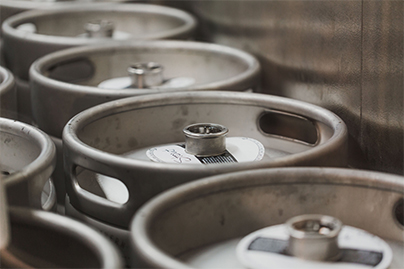
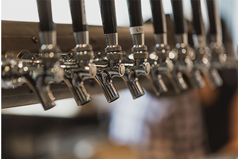
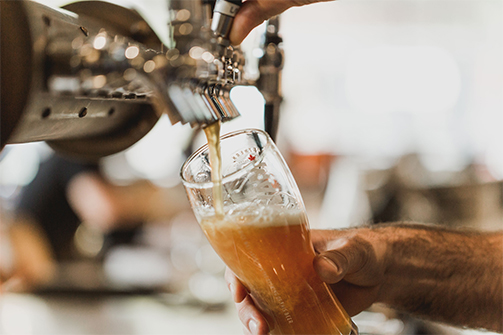

Home - Breve introduzione al sito
 
Tralasciando l'obiettivo principale, ovvero realizzare un progetto per il corso universitario,
il motivo della creazione di questo sito è dovuto alla mia passione per il mondo birrario e
tutto ciò che ne concerne.
Questo ambito è generalmente poco conosciuto, essendo la cultura italiana legata
più al mondo vinicolo. Il sito servirà quindi a costruire delle fondamenta basilari per i più curiosi.
Spero di non annoiarvi troppo e buona navigazione!
Navigazione consigliata: si consiglia prima la lettura della "Storia" della birra (la piccola icona con il grano),
successivamente quella della "Birra" (la piccola icona con il boccale), ovvero delle differenti tipologie di birra.
Con le conoscenze apprese potrete cimentarvi infine nella scelta dello "Stile" (la piccola icona con il tappo) con un simpatico questionario interattivo.
Se volete tornare alla home, cliccate sul logo "Birrology". Le Info e fonti del sito sono elencate in "About" (la piccola icona con i baffi).
Durante la navigazione se si scorre la pagina, apparirà una freccia che punta in alto, questa vi porterà diretti al menù di navigazione.
Curiosità sulla birra!
Cliccami per scoprire di più!
Complimenti, hai finito le curiosità!